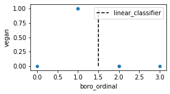
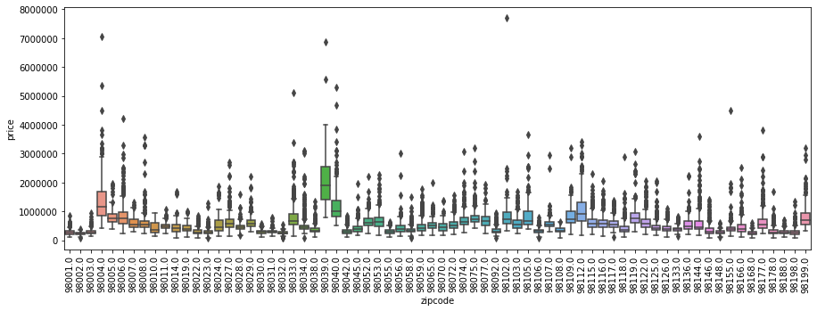

Categorical Variables¶
import re
def df2html(df):
shorter = df._repr_html_().replace("th>\n", "th>")
shorter = shorter.replace("<tr>\n", "<tr>")
shorter = shorter.replace("td>\n", "td>")
shorter = re.sub(">[ \t]+<", "><", shorter)
print(shorter)
import pandas as pd
df = pd.DataFrame({'boro': ['Manhattan', 'Queens', 'Manhattan', 'Brooklyn', 'Brooklyn', 'Bronx'],
'salary': [103, 89, 142, 54, 63, 219],
'vegan': ['No', 'No','No','Yes', 'Yes', 'No']})
df
| boro | salary | vegan | |
|---|---|---|---|
| 0 | Manhattan | 103 | No |
| 1 | Queens | 89 | No |
| 2 | Manhattan | 142 | No |
| 3 | Brooklyn | 54 | Yes |
| 4 | Brooklyn | 63 | Yes |
| 5 | Bronx | 219 | No |
df2html(df)
<div>
<style scoped>
.dataframe tbody tr th:only-of-type {
vertical-align: middle;
}
.dataframe tbody tr th {
vertical-align: top;
}
.dataframe thead th {
text-align: right;
}
</style>
<table border="1" class="dataframe">
<thead>
<tr style="text-align: right;">
<th></th><th>boro</th><th>salary</th><th>vegan</th></tr>
</thead>
<tbody>
<tr><th>0</th><td>Manhattan</td><td>103</td><td>No</td></tr>
<tr><th>1</th><td>Queens</td><td>89</td><td>No</td></tr>
<tr><th>2</th><td>Manhattan</td><td>142</td><td>No</td></tr>
<tr><th>3</th><td>Brooklyn</td><td>54</td><td>Yes</td></tr>
<tr><th>4</th><td>Brooklyn</td><td>63</td><td>Yes</td></tr>
<tr><th>5</th><td>Bronx</td><td>219</td><td>No</td></tr>
</tbody>
</table>
</div>
df['boro_ordinal'] = df.boro.astype("category").cat.codes
# reorder columns so it looks nice
df = df[['boro', 'boro_ordinal', 'vegan']]
df
| boro | boro_ordinal | vegan | |
|---|---|---|---|
| 0 | Manhattan | 2 | No |
| 1 | Queens | 3 | No |
| 2 | Manhattan | 2 | No |
| 3 | Brooklyn | 1 | Yes |
| 4 | Brooklyn | 1 | Yes |
| 5 | Bronx | 0 | No |
df2html(df)
<div>
<style scoped>
.dataframe tbody tr th:only-of-type {
vertical-align: middle;
}
.dataframe tbody tr th {
vertical-align: top;
}
.dataframe thead th {
text-align: right;
}
</style>
<table border="1" class="dataframe">
<thead>
<tr style="text-align: right;">
<th></th><th>boro</th><th>boro_ordinal</th><th>vegan</th></tr>
</thead>
<tbody>
<tr><th>0</th><td>Manhattan</td><td>2</td><td>No</td></tr>
<tr><th>1</th><td>Queens</td><td>3</td><td>No</td></tr>
<tr><th>2</th><td>Manhattan</td><td>2</td><td>No</td></tr>
<tr><th>3</th><td>Brooklyn</td><td>1</td><td>Yes</td></tr>
<tr><th>4</th><td>Brooklyn</td><td>1</td><td>Yes</td></tr>
<tr><th>5</th><td>Bronx</td><td>0</td><td>No</td></tr>
</tbody>
</table>
</div>
df_int = df.copy()
df_int['vegan'] = df.vegan.astype("category").cat.codes
plt.figure(figsize=(4, 2))
df_int.plot(x='boro_ordinal', y='vegan', kind='scatter', ax=plt.gca())
plt.savefig("images/boro_ordinal.png")

from sklearn.linear_model import LogisticRegression
lr = LogisticRegression().fit(df[['boro_ordinal']], df.vegan)
lr.coef_
array([[-0.45784715]])
lr.intercept_
array([-0.03782071])
dec = lr.decision_function(np.linspace(0, 3).reshape(-1, 1))
lr.predict(np.linspace(0, 3).reshape(-1, 1))
array(['No', 'No', 'No', 'No', 'No', 'No', 'No', 'No', 'No', 'No', 'No',
'No', 'No', 'No', 'No', 'No', 'No', 'No', 'No', 'No', 'No', 'No',
'No', 'No', 'No', 'No', 'No', 'No', 'No', 'No', 'No', 'No', 'No',
'No', 'No', 'No', 'No', 'No', 'No', 'No', 'No', 'No', 'No', 'No',
'No', 'No', 'No', 'No', 'No', 'No'], dtype=object)
plt.figure(figsize=(4, 2))
df_int.plot(x='boro_ordinal', y='vegan', kind='scatter', ax=plt.gca())
plt.vlines([1.5], 0, 1, linestyle='--', label='linear_classifier')
plt.legend(loc='best')
plt.savefig("images/boro_ordinal_classification.png")

df = pd.DataFrame({'boro': ['Manhattan', 'Queens', 'Manhattan', 'Brooklyn', 'Brooklyn', 'Bronx'],
'salary': [103, 89, 142, 54, 63, 219],
'vegan': ['No', 'No','No','Yes', 'Yes', 'No']})
df
| boro | salary | vegan | |
|---|---|---|---|
| 0 | Manhattan | 103 | No |
| 1 | Queens | 89 | No |
| 2 | Manhattan | 142 | No |
| 3 | Brooklyn | 54 | Yes |
| 4 | Brooklyn | 63 | Yes |
| 5 | Bronx | 219 | No |
df2html(df)
<div>
<style scoped>
.dataframe tbody tr th:only-of-type {
vertical-align: middle;
}
.dataframe tbody tr th {
vertical-align: top;
}
.dataframe thead th {
text-align: right;
}
</style>
<table border="1" class="dataframe">
<thead>
<tr style="text-align: right;">
<th></th><th>boro</th><th>salary</th><th>vegan</th></tr>
</thead>
<tbody>
<tr><th>0</th><td>Manhattan</td><td>103</td><td>No</td></tr>
<tr><th>1</th><td>Queens</td><td>89</td><td>No</td></tr>
<tr><th>2</th><td>Manhattan</td><td>142</td><td>No</td></tr>
<tr><th>3</th><td>Brooklyn</td><td>54</td><td>Yes</td></tr>
<tr><th>4</th><td>Brooklyn</td><td>63</td><td>Yes</td></tr>
<tr><th>5</th><td>Bronx</td><td>219</td><td>No</td></tr>
</tbody>
</table>
</div>
df2html(pd.get_dummies(df))
<div>
<style scoped>
.dataframe tbody tr th:only-of-type {
vertical-align: middle;
}
.dataframe tbody tr th {
vertical-align: top;
}
.dataframe thead th {
text-align: right;
}
</style>
<table border="1" class="dataframe">
<thead>
<tr style="text-align: right;">
<th></th><th>salary</th><th>boro_Bronx</th><th>boro_Brooklyn</th><th>boro_Manhattan</th><th>boro_Queens</th><th>vegan_No</th><th>vegan_Yes</th></tr>
</thead>
<tbody>
<tr><th>0</th><td>103</td><td>0</td><td>0</td><td>1</td><td>0</td><td>1</td><td>0</td></tr>
<tr><th>1</th><td>89</td><td>0</td><td>0</td><td>0</td><td>1</td><td>1</td><td>0</td></tr>
<tr><th>2</th><td>142</td><td>0</td><td>0</td><td>1</td><td>0</td><td>1</td><td>0</td></tr>
<tr><th>3</th><td>54</td><td>0</td><td>1</td><td>0</td><td>0</td><td>0</td><td>1</td></tr>
<tr><th>4</th><td>63</td><td>0</td><td>1</td><td>0</td><td>0</td><td>0</td><td>1</td></tr>
<tr><th>5</th><td>219</td><td>1</td><td>0</td><td>0</td><td>0</td><td>1</td><td>0</td></tr>
</tbody>
</table>
</div>
import re
def df2html(df):
shorter = df.to_html().replace("th>\n", "th>")
shorter = shorter.replace("<tr>\n", "<tr>")
shorter = shorter.replace("td>\n", "td>")
shorter = re.sub(">[ \t]+<", "><", shorter)
print(shorter)
df2html(pd.get_dummies(df))
<table border="1" class="dataframe">
<thead>
<tr style="text-align: right;">
<th></th><th>salary</th><th>boro_Bronx</th><th>boro_Brooklyn</th><th>boro_Manhattan</th><th>boro_Queens</th><th>vegan_No</th><th>vegan_Yes</th></tr>
</thead>
<tbody>
<tr><th>0</th><td>103</td><td>0</td><td>0</td><td>1</td><td>0</td><td>1</td><td>0</td></tr>
<tr><th>1</th><td>89</td><td>0</td><td>0</td><td>0</td><td>1</td><td>1</td><td>0</td></tr>
<tr><th>2</th><td>142</td><td>0</td><td>0</td><td>1</td><td>0</td><td>1</td><td>0</td></tr>
<tr><th>3</th><td>54</td><td>0</td><td>1</td><td>0</td><td>0</td><td>0</td><td>1</td></tr>
<tr><th>4</th><td>63</td><td>0</td><td>1</td><td>0</td><td>0</td><td>0</td><td>1</td></tr>
<tr><th>5</th><td>219</td><td>1</td><td>0</td><td>0</td><td>0</td><td>1</td><td>0</td></tr>
</tbody>
</table>
pd.get_dummies(df, columns=['boro'])
| salary | vegan | boro_Bronx | boro_Brooklyn | boro_Manhattan | boro_Queens | |
|---|---|---|---|---|---|---|
| 0 | 103 | No | 0 | 0 | 1 | 0 |
| 1 | 89 | No | 0 | 0 | 0 | 1 |
| 2 | 142 | No | 0 | 0 | 1 | 0 |
| 3 | 54 | Yes | 0 | 1 | 0 | 0 |
| 4 | 63 | Yes | 0 | 1 | 0 | 0 |
| 5 | 219 | No | 1 | 0 | 0 | 0 |
df2html(pd.get_dummies(df, columns=['boro']))
<table border="1" class="dataframe">
<thead>
<tr style="text-align: right;">
<th></th><th>salary</th><th>vegan</th><th>boro_Bronx</th><th>boro_Brooklyn</th><th>boro_Manhattan</th><th>boro_Queens</th></tr>
</thead>
<tbody>
<tr><th>0</th><td>103</td><td>No</td><td>0</td><td>0</td><td>1</td><td>0</td></tr>
<tr><th>1</th><td>89</td><td>No</td><td>0</td><td>0</td><td>0</td><td>1</td></tr>
<tr><th>2</th><td>142</td><td>No</td><td>0</td><td>0</td><td>1</td><td>0</td></tr>
<tr><th>3</th><td>54</td><td>Yes</td><td>0</td><td>1</td><td>0</td><td>0</td></tr>
<tr><th>4</th><td>63</td><td>Yes</td><td>0</td><td>1</td><td>0</td><td>0</td></tr>
<tr><th>5</th><td>219</td><td>No</td><td>1</td><td>0</td><td>0</td><td>0</td></tr>
</tbody>
</table>
df_ordinal = df.copy()
df_ordinal['boro'] = df.boro.astype("category").cat.codes
df_ordinal
| boro | salary | vegan | |
|---|---|---|---|
| 0 | 2 | 103 | No |
| 1 | 3 | 89 | No |
| 2 | 2 | 142 | No |
| 3 | 1 | 54 | Yes |
| 4 | 1 | 63 | Yes |
| 5 | 0 | 219 | No |
df2html(df_ordinal)
<table border="1" class="dataframe">
<thead>
<tr style="text-align: right;">
<th></th><th>boro</th><th>salary</th><th>vegan</th></tr>
</thead>
<tbody>
<tr><th>0</th><td>2</td><td>103</td><td>No</td></tr>
<tr><th>1</th><td>3</td><td>89</td><td>No</td></tr>
<tr><th>2</th><td>2</td><td>142</td><td>No</td></tr>
<tr><th>3</th><td>1</td><td>54</td><td>Yes</td></tr>
<tr><th>4</th><td>1</td><td>63</td><td>Yes</td></tr>
<tr><th>5</th><td>0</td><td>219</td><td>No</td></tr>
</tbody>
</table>
pd.get_dummies(df_ordinal, columns=['boro'])
| salary | vegan | boro_0 | boro_1 | boro_2 | boro_3 | |
|---|---|---|---|---|---|---|
| 0 | 103 | No | 0 | 0 | 1 | 0 |
| 1 | 89 | No | 0 | 0 | 0 | 1 |
| 2 | 142 | No | 0 | 0 | 1 | 0 |
| 3 | 54 | Yes | 0 | 1 | 0 | 0 |
| 4 | 63 | Yes | 0 | 1 | 0 | 0 |
| 5 | 219 | No | 1 | 0 | 0 | 0 |
df2html(pd.get_dummies(df_ordinal, columns=['boro']))
<table border="1" class="dataframe">
<thead>
<tr style="text-align: right;">
<th></th><th>salary</th><th>vegan</th><th>boro_0</th><th>boro_1</th><th>boro_2</th><th>boro_3</th></tr>
</thead>
<tbody>
<tr><th>0</th><td>103</td><td>No</td><td>0</td><td>0</td><td>1</td><td>0</td></tr>
<tr><th>1</th><td>89</td><td>No</td><td>0</td><td>0</td><td>0</td><td>1</td></tr>
<tr><th>2</th><td>142</td><td>No</td><td>0</td><td>0</td><td>1</td><td>0</td></tr>
<tr><th>3</th><td>54</td><td>Yes</td><td>0</td><td>1</td><td>0</td><td>0</td></tr>
<tr><th>4</th><td>63</td><td>Yes</td><td>0</td><td>1</td><td>0</td><td>0</td></tr>
<tr><th>5</th><td>219</td><td>No</td><td>1</td><td>0</td><td>0</td><td>0</td></tr>
</tbody>
</table>
df = pd.DataFrame({'boro': ['Manhattan', 'Queens', 'Manhattan', 'Brooklyn', 'Brooklyn', 'Bronx'],
'salary': [103, 89, 142, 54, 63, 219],
'vegan': ['No', 'No','No','Yes', 'Yes', 'No']})
df_dummies = pd.get_dummies(df, columns=['boro'])
display(df_dummies)
df2html(df_dummies)
| salary | vegan | boro_Bronx | boro_Brooklyn | boro_Manhattan | boro_Queens | |
|---|---|---|---|---|---|---|
| 0 | 103 | No | 0 | 0 | 1 | 0 |
| 1 | 89 | No | 0 | 0 | 0 | 1 |
| 2 | 142 | No | 0 | 0 | 1 | 0 |
| 3 | 54 | Yes | 0 | 1 | 0 | 0 |
| 4 | 63 | Yes | 0 | 1 | 0 | 0 |
| 5 | 219 | No | 1 | 0 | 0 | 0 |
<table border="1" class="dataframe">
<thead>
<tr style="text-align: right;">
<th></th><th>salary</th><th>vegan</th><th>boro_Bronx</th><th>boro_Brooklyn</th><th>boro_Manhattan</th><th>boro_Queens</th></tr>
</thead>
<tbody>
<tr><th>0</th><td>103</td><td>No</td><td>0</td><td>0</td><td>1</td><td>0</td></tr>
<tr><th>1</th><td>89</td><td>No</td><td>0</td><td>0</td><td>0</td><td>1</td></tr>
<tr><th>2</th><td>142</td><td>No</td><td>0</td><td>0</td><td>1</td><td>0</td></tr>
<tr><th>3</th><td>54</td><td>Yes</td><td>0</td><td>1</td><td>0</td><td>0</td></tr>
<tr><th>4</th><td>63</td><td>Yes</td><td>0</td><td>1</td><td>0</td><td>0</td></tr>
<tr><th>5</th><td>219</td><td>No</td><td>1</td><td>0</td><td>0</td><td>0</td></tr>
</tbody>
</table>
df = pd.DataFrame({'boro': ['Brooklyn', 'Manhattan', 'Brooklyn', 'Queens', 'Brooklyn', 'Staten Island'],
'salary': [61, 146, 142, 212, 98, 47],
'vegan': ['Yes', 'No','Yes','No', 'Yes', 'No']})
df_dummies = pd.get_dummies(df, columns=['boro'])
display(df_dummies)
df2html(df_dummies)
| salary | vegan | boro_Brooklyn | boro_Manhattan | boro_Queens | boro_Staten Island | |
|---|---|---|---|---|---|---|
| 0 | 61 | Yes | 1 | 0 | 0 | 0 |
| 1 | 146 | No | 0 | 1 | 0 | 0 |
| 2 | 142 | Yes | 1 | 0 | 0 | 0 |
| 3 | 212 | No | 0 | 0 | 1 | 0 |
| 4 | 98 | Yes | 1 | 0 | 0 | 0 |
| 5 | 47 | No | 0 | 0 | 0 | 1 |
<table border="1" class="dataframe">
<thead>
<tr style="text-align: right;">
<th></th><th>salary</th><th>vegan</th><th>boro_Brooklyn</th><th>boro_Manhattan</th><th>boro_Queens</th><th>boro_Staten Island</th></tr>
</thead>
<tbody>
<tr><th>0</th><td>61</td><td>Yes</td><td>1</td><td>0</td><td>0</td><td>0</td></tr>
<tr><th>1</th><td>146</td><td>No</td><td>0</td><td>1</td><td>0</td><td>0</td></tr>
<tr><th>2</th><td>142</td><td>Yes</td><td>1</td><td>0</td><td>0</td><td>0</td></tr>
<tr><th>3</th><td>212</td><td>No</td><td>0</td><td>0</td><td>1</td><td>0</td></tr>
<tr><th>4</th><td>98</td><td>Yes</td><td>1</td><td>0</td><td>0</td><td>0</td></tr>
<tr><th>5</th><td>47</td><td>No</td><td>0</td><td>0</td><td>0</td><td>1</td></tr>
</tbody>
</table>
df = pd.DataFrame({'boro': ['Manhattan', 'Queens', 'Manhattan', 'Brooklyn', 'Brooklyn', 'Bronx'],
'salary': [103, 89, 142, 54, 63, 219],
'vegan': ['No', 'No','No','Yes', 'Yes', 'No']})
df['boro'] = pd.Categorical(
df.boro, categories=['Manhattan', 'Queens', 'Brooklyn', 'Bronx', 'Staten Island'])
df_dummies = pd.get_dummies(df, columns=['boro'])
display(df_dummies)
df2html(df_dummies)
| salary | vegan | boro_Manhattan | boro_Queens | boro_Brooklyn | boro_Bronx | boro_Staten Island | |
|---|---|---|---|---|---|---|---|
| 0 | 103 | No | 1 | 0 | 0 | 0 | 0 |
| 1 | 89 | No | 0 | 1 | 0 | 0 | 0 |
| 2 | 142 | No | 1 | 0 | 0 | 0 | 0 |
| 3 | 54 | Yes | 0 | 0 | 1 | 0 | 0 |
| 4 | 63 | Yes | 0 | 0 | 1 | 0 | 0 |
| 5 | 219 | No | 0 | 0 | 0 | 1 | 0 |
<table border="1" class="dataframe">
<thead>
<tr style="text-align: right;">
<th></th><th>salary</th><th>vegan</th><th>boro_Manhattan</th><th>boro_Queens</th><th>boro_Brooklyn</th><th>boro_Bronx</th><th>boro_Staten Island</th></tr>
</thead>
<tbody>
<tr><th>0</th><td>103</td><td>No</td><td>1</td><td>0</td><td>0</td><td>0</td><td>0</td></tr>
<tr><th>1</th><td>89</td><td>No</td><td>0</td><td>1</td><td>0</td><td>0</td><td>0</td></tr>
<tr><th>2</th><td>142</td><td>No</td><td>1</td><td>0</td><td>0</td><td>0</td><td>0</td></tr>
<tr><th>3</th><td>54</td><td>Yes</td><td>0</td><td>0</td><td>1</td><td>0</td><td>0</td></tr>
<tr><th>4</th><td>63</td><td>Yes</td><td>0</td><td>0</td><td>1</td><td>0</td><td>0</td></tr>
<tr><th>5</th><td>219</td><td>No</td><td>0</td><td>0</td><td>0</td><td>1</td><td>0</td></tr>
</tbody>
</table>
from sklearn.preprocessing import OneHotEncoder
df = pd.DataFrame({'salary': [103, 89, 142, 54, 63, 219],
'boro': ['Manhattan', 'Queens', 'Manhattan', 'Brooklyn', 'Brooklyn', 'Bronx']})
ce = OneHotEncoder().fit(df)
ce.transform(df).toarray()
array([[0., 0., 0., 1., 0., 0., 0., 0., 1., 0.],
[0., 0., 1., 0., 0., 0., 0., 0., 0., 1.],
[0., 0., 0., 0., 1., 0., 0., 0., 1., 0.],
[1., 0., 0., 0., 0., 0., 0., 1., 0., 0.],
[0., 1., 0., 0., 0., 0., 0., 1., 0., 0.],
[0., 0., 0., 0., 0., 1., 1., 0., 0., 0.]])
from sklearn.compose import make_column_transformer
from sklearn.linear_model import LogisticRegression
# The Future!
categorical = df.dtypes == object
preprocess = make_column_transformer(
(StandardScaler(), ~categorical),
(OneHotEncoder(), categorical))
model = make_pipeline(preprocess, LogisticRegression())
target featurizer¶
data.frame.columns
Index(['date', 'price', 'bedrooms', 'bathrooms', 'sqft_living', 'sqft_lot',
'floors', 'waterfront', 'view', 'condition', 'grade', 'sqft_above',
'sqft_basement', 'yr_built', 'yr_renovated', 'zipcode', 'lat', 'long',
'sqft_living15', 'sqft_lot15'],
dtype='object')
data.frame.zipcode.value_counts()
98103.0 602
98038.0 590
98115.0 583
98052.0 574
98117.0 553
...
98102.0 105
98010.0 100
98024.0 81
98148.0 57
98039.0 50
Name: zipcode, Length: 70, dtype: int64
import seaborn as sns
plt.figure(figsize=(15, 5))
ax = sns.boxplot(data.frame.zipcode, data.frame.price)
#plt.tight_layout()
ax.set_xticklabels(ax.get_xticklabels(), rotation=90);
plt.savefig("images/zip_code_prices.png")

data = fetch_openml("house_sales", as_frame=True)
X = data.frame.drop(['date', 'price'], axis=1)
X_train, X_test, y_train, y_test = train_test_split(X, target)
X_train.columns
/home/andy/checkout/scikit-learn/sklearn/datasets/_openml.py:372: UserWarning: Multiple active versions of the dataset matching the name house_sales exist. Versions may be fundamentally different, returning version 1.
" {version}.".format(name=name, version=res[0]['version']))
Index(['bedrooms', 'bathrooms', 'sqft_living', 'sqft_lot', 'floors',
'waterfront', 'view', 'condition', 'grade', 'sqft_above',
'sqft_basement', 'yr_built', 'yr_renovated', 'zipcode', 'lat', 'long',
'sqft_living15', 'sqft_lot15'],
dtype='object')
# drop some stuff so it fits on slide
import pandas as pd
pd.set_option('display.max_columns', 10)
#disp = X_train.drop(['waterfront', 'view', 'condition', 'grade', 'sqft_basement', 'yr_renovated'], axis=1).head()
disp = X_train.head()
disp
| bedrooms | bathrooms | sqft_living | sqft_lot | floors | ... | zipcode | lat | long | sqft_living15 | sqft_lot15 | |
|---|---|---|---|---|---|---|---|---|---|---|---|
| 3054 | 2.0 | 1.00 | 1080.0 | 6250.0 | 1.0 | ... | 98118.0 | 47.5128 | -122.251 | 2100.0 | 6875.0 |
| 19002 | 2.0 | 1.00 | 830.0 | 26329.0 | 1.0 | ... | 98070.0 | 47.4012 | -122.425 | 2030.0 | 27338.0 |
| 11673 | 5.0 | 3.50 | 5000.0 | 26540.0 | 2.0 | ... | 98040.0 | 47.5665 | -122.210 | 3360.0 | 17398.0 |
| 13758 | 3.0 | 3.25 | 2940.0 | 5432.0 | 3.0 | ... | 98109.0 | 47.6299 | -122.354 | 4400.0 | 5500.0 |
| 12526 | 3.0 | 1.75 | 1550.0 | 8134.0 | 1.0 | ... | 98008.0 | 47.6136 | -122.121 | 1360.0 | 8000.0 |
5 rows × 18 columns
disp._repr_html_()
'<div>\n<style scoped>\n .dataframe tbody tr th:only-of-type {\n vertical-align: middle;\n }\n\n .dataframe tbody tr th {\n vertical-align: top;\n }\n\n .dataframe thead th {\n text-align: right;\n }\n</style>\n<table border="1" class="dataframe">\n <thead>\n <tr style="text-align: right;">\n <th></th>\n <th>bedrooms</th>\n <th>bathrooms</th>\n <th>sqft_living</th>\n <th>sqft_lot</th>\n <th>floors</th>\n <th>...</th>\n <th>zipcode</th>\n <th>lat</th>\n <th>long</th>\n <th>sqft_living15</th>\n <th>sqft_lot15</th>\n </tr>\n </thead>\n <tbody>\n <tr>\n <th>3054</th>\n <td>2.0</td>\n <td>1.00</td>\n <td>1080.0</td>\n <td>6250.0</td>\n <td>1.0</td>\n <td>...</td>\n <td>98118.0</td>\n <td>47.5128</td>\n <td>-122.251</td>\n <td>2100.0</td>\n <td>6875.0</td>\n </tr>\n <tr>\n <th>19002</th>\n <td>2.0</td>\n <td>1.00</td>\n <td>830.0</td>\n <td>26329.0</td>\n <td>1.0</td>\n <td>...</td>\n <td>98070.0</td>\n <td>47.4012</td>\n <td>-122.425</td>\n <td>2030.0</td>\n <td>27338.0</td>\n </tr>\n <tr>\n <th>11673</th>\n <td>5.0</td>\n <td>3.50</td>\n <td>5000.0</td>\n <td>26540.0</td>\n <td>2.0</td>\n <td>...</td>\n <td>98040.0</td>\n <td>47.5665</td>\n <td>-122.210</td>\n <td>3360.0</td>\n <td>17398.0</td>\n </tr>\n <tr>\n <th>13758</th>\n <td>3.0</td>\n <td>3.25</td>\n <td>2940.0</td>\n <td>5432.0</td>\n <td>3.0</td>\n <td>...</td>\n <td>98109.0</td>\n <td>47.6299</td>\n <td>-122.354</td>\n <td>4400.0</td>\n <td>5500.0</td>\n </tr>\n <tr>\n <th>12526</th>\n <td>3.0</td>\n <td>1.75</td>\n <td>1550.0</td>\n <td>8134.0</td>\n <td>1.0</td>\n <td>...</td>\n <td>98008.0</td>\n <td>47.6136</td>\n <td>-122.121</td>\n <td>1360.0</td>\n <td>8000.0</td>\n </tr>\n </tbody>\n</table>\n<p>5 rows × 18 columns</p>\n</div>'
df2html(disp)
<table border="1" class="dataframe">
<thead>
<tr style="text-align: right;">
<th></th><th>bedrooms</th><th>bathrooms</th><th>sqft_living</th><th>sqft_lot</th><th>floors</th><th>waterfront</th><th>view</th><th>condition</th><th>grade</th><th>sqft_above</th><th>sqft_basement</th><th>yr_built</th><th>yr_renovated</th><th>zipcode</th><th>lat</th><th>long</th><th>sqft_living15</th><th>sqft_lot15</th></tr>
</thead>
<tbody>
<tr><th>3054</th><td>2.0</td><td>1.00</td><td>1080.0</td><td>6250.0</td><td>1.0</td><td>0.0</td><td>2.0</td><td>4.0</td><td>7.0</td><td>1080.0</td><td>0.0</td><td>1942.0</td><td>1968.0</td><td>98118.0</td><td>47.5128</td><td>-122.251</td><td>2100.0</td><td>6875.0</td></tr>
<tr><th>19002</th><td>2.0</td><td>1.00</td><td>830.0</td><td>26329.0</td><td>1.0</td><td>1.0</td><td>3.0</td><td>4.0</td><td>6.0</td><td>830.0</td><td>0.0</td><td>1928.0</td><td>0.0</td><td>98070.0</td><td>47.4012</td><td>-122.425</td><td>2030.0</td><td>27338.0</td></tr>
<tr><th>11673</th><td>5.0</td><td>3.50</td><td>5000.0</td><td>26540.0</td><td>2.0</td><td>0.0</td><td>3.0</td><td>3.0</td><td>10.0</td><td>3410.0</td><td>1590.0</td><td>2008.0</td><td>0.0</td><td>98040.0</td><td>47.5665</td><td>-122.210</td><td>3360.0</td><td>17398.0</td></tr>
<tr><th>13758</th><td>3.0</td><td>3.25</td><td>2940.0</td><td>5432.0</td><td>3.0</td><td>0.0</td><td>3.0</td><td>4.0</td><td>10.0</td><td>2440.0</td><td>500.0</td><td>1978.0</td><td>0.0</td><td>98109.0</td><td>47.6299</td><td>-122.354</td><td>4400.0</td><td>5500.0</td></tr>
<tr><th>12526</th><td>3.0</td><td>1.75</td><td>1550.0</td><td>8134.0</td><td>1.0</td><td>0.0</td><td>0.0</td><td>4.0</td><td>7.0</td><td>1550.0</td><td>0.0</td><td>1959.0</td><td>0.0</td><td>98008.0</td><td>47.6136</td><td>-122.121</td><td>1360.0</td><td>8000.0</td></tr>
</tbody>
</table>
te = TargetEncoder(cols='zipcode').fit(X_train, y_train)
te.transform(X_train).head()
---------------------------------------------------------------------------
NameError Traceback (most recent call last)
<ipython-input-85-36c63ba85b49> in <module>
----> 1 te = TargetEncoder(cols='zipcode').fit(X_train, y_train)
2 te.transform(X_train).head()
NameError: name 'TargetEncoder' is not defined
disp2 = te.transform(X_train).head()
df2html(disp2)
pd.DataFrame(y.groupby(X.zipcode).mean()[X_train.head().zipcode]).T
df2html(pd.DataFrame(y_train.groupby(X_train.zipcode).mean()[X_train.head().zipcode]).T)
from category_encoders import LeaveOneOutEncoder, TargetEncoder
X = data.frame.drop(['date', 'price'], axis=1)
pipe_target = make_pipeline(TargetEncoder(cols='zipcode'), Ridge())
scores = cross_val_score(pipe_target, X, target)
np.mean(scores)
X = data.frame.drop(['date', 'price', 'zipcode'], axis=1)
scores = cross_val_score(Ridge(), X, target)
np.mean(scores)
from sklearn.compose import make_column_transformer
from sklearn.preprocessing import OneHotEncoder
X = data.frame.drop(['date', 'price'], axis=1)
pipe_ohe = make_pipeline(make_column_transformer((OneHotEncoder(), ['zipcode']), remainder='passthrough'), Ridge())
scores = cross_val_score(pipe_ohe, X, target)
np.mean(scores)
X.columns
TargetEncoder(cols='zipcode').fit_transform(data.frame, y)